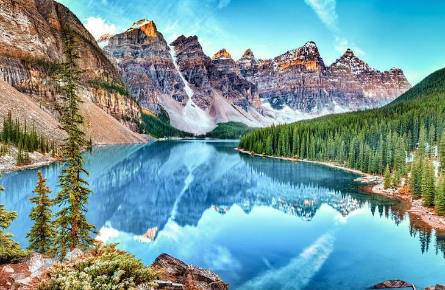

what is a national park?
according to britannica, a national park is an area set aside by a national government for the preservation of the natural environment.
— more info —
A national park may be set aside for purposes of public recreation and enjoyment or because of its historical or scientific interest. Most of the landscapes and their accompanying plants and animals in a national park are kept in their natural state. The national parks in the United States and Canada tend to focus on the protection of both land and wildlife, those in the United Kingdom focus mainly on the land, and those in Africa primarily exist to conserve animals. Several other countries have large areas reserved in national parks, notably Brazil, Japan, India, and Australia.
It is generally thought that the concept of a park or nature reserve under state ownership originated in the United States in 1870 and that the world’s first such park was Yellowstone National Park in Wyoming, created through legislation signed by U.S. Pres. Ulysses S. Grant in 1872. However, some naturalists and others have argued that there is evidence that indicates that the creation of Yellowstone was predated by the creation of Bogd Khan Mountain National Park in Mongolia, which may date from as early as 1778.